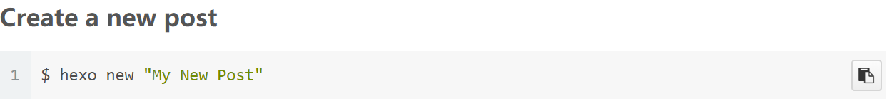
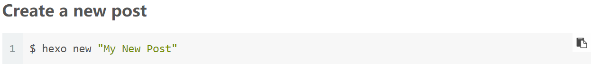
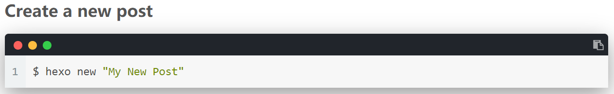

搭建博客
我最开始是参考ouuan的博客搭建的hexo，但发现随着版本的变更，不少配置出现了变化，同时我在网上也看到了不少不错的 hexo css 设置，但不少博客抄袭了旧版本的配置，而不且少旧版本的配置也不再适用。所以我重新写了一篇笔记。
upd：NexT 8.0.0 及 hexo 5.2.0 发布，回归简约。
hexo 特点：
- 依赖于 Node.js。
- 国内使用非常广泛。
- 渲染慢。（可以使用 Travis CI 省去本地部署的时间）
- 本地预览也很慢。（Hugo 可以解决一切 hexo 速度慢的缺点）
- 丰富的插件。（这是 Hugo 缺乏的）
- 貌似不同操作系统的兼容性非常不好。（导致在 WSL 中构建的博客甚至不能在 Windows 中使用，同时可能是 WSL 的原因，hexo 不支持 WSL 中即时预览，需要反复运行命令
hexo server）
NexT 唯一特点：
- 极其简约，易上手，高度沉浸式的阅读。（这也是我放弃了 Hugo 的唯一原因。博客的功能就是阅读，而 Hugo 里我还找不到像 NexT 一样的主题）（所以不要试图往 NexT 里加一些花里胡哨的东西）
现在我已经尽可能做到了 NexT 的简洁，但是我还是保存了之前参考过并整理，更新过的内容。由于这些大多是 NexT 7.2.0 时期的教程，并且 NexT 版本间差异较大，所以不保证可以正常使用。
相关网址（注意 NexT 已经切换了两次仓库网址）：
hexo的依赖
安装Git与Node.js，Git 可以看这个官方教程，也可以看 StudyingFather 的教程。
建议安装Typora或vscode作为 Markdown 编辑器。
Windows 下建议在应用商店安装 Windows Terminal，并设置系统默认编码为 UTF-8，以防止中文渲染错误。
安装hexo
选择根目录，然后开启一个终端。终端的位置应始终在博客根目录。
npm install -g hexo 安装hexo。
hexo init 在博客根目录下初始化hexo。
如果 npm 比较慢，可以 npm 切换淘宝源。但是淘宝源在安装 next-util 时会出错，必须使用默认源：
1 | # 淘宝源： |
npm install 安装必要的包，然后输入命令 hexo s，并在浏览器打开 localhost:4000 以本地预览博客。
注意：使用
localhost:4000时只能使用 http，使用 GitHub Pages 建议设置为强制使用 https。
停止预览可以 Ctrl+C 关闭 server 以继续操作。（若出现
Terminate batch job (Y/N)?，输入y即可。）
下面安装 NexT ，也可以使用默认主题 landscape，或在 hexo 官网 选择其他主题下载。
输入git clone https://github.com/theme-next/hexo-theme-next themes/next 下载 NexT 。鉴于Github网速慢，可以手动IDM下载，或者把 Github 仓库导入到码云，然后从码云下载。不要直接从码云镜像站下载（参考下面的链接渲染错误那一部分）。
下载好主题后，打开根目录下的 _config.yml ，将 theme: landscape 修改为 theme: next。
配置 GitHub 仓库
注册一个 GitHub 账号。然后点击右上角加号，选择“New repository”。
”Repository name”填 yourname.github.io （“yourname”指 GitHub ID），然后点“Create repository”。之后Github Pages会自动将 yourname.github.io 作为博客网址。
上面的步骤也可以在Github Desktop中执行。
将博客上传至 GitHub，使用 Github Pages 部署博客
如果使用 SSH，部署博客时可以不需要填写密码，而且更加安全。不使用则直接跳过这一折叠块。
输入命令 ssh-keygen 生成 SSH，要输入东西就按回车（应该要按三次）。
打开 %userprofile%\.ssh\id_rsa.pub 复制全部内容。
打开 GitHub，点击右上角的头像，打开“Settings”，选择左边的“SSH and GPG keys”，点“New SSH key”，Title 随便填，把刚才复制的东西粘贴到 Key ，然后点“Add SSH key”。过程中需要输入密码。
输入命令 ssh -T git@github.com ，若出现 Hi yourname! You've successfully authenticated, but GitHub does not provide shell access. 表示 SSH 配置成功。
更多操作可以参考原文档。
输入命令 npm install hexo-deployer-git --save 安装 deployer 。
打开根目录下的 _config.yml ，将最后几行改为：
1 | deploy: |
输入命令 hexo g -d 。如果没有使用SSH，这一步要输入密码。
用浏览器打开 yourname.github.io ，如果前面的操作没有问题，应该就可以看到你的博客了。
同时在码云上部署
建议先查看码云官方文档：
Github 速度很慢，我的博客完全配置好之后往往要数分钟才能打开，所以可以将 hexo 博客同时部署到 GitHub 和码云上。
（不过码云也有缺点，就是偶尔会加载不出元素）
码云的速度比 Github 快很多，就是在部署后需要重新到 Gitee Pages 服务界面刷新。
注册一个码云，在码云上创建一个新仓库，仓库名字和你的码云个性地址一样（这样才能使用 https://yourname.gitee.io 作为域名），然后在最下方选择直接从 Github 导入仓库，输入 Github 的仓库网址。
创建好后，从仓库界面点击服务-Gitee Pages，然后直接更新。
然后访问 yourname.gitee.io，应该可以正常访问了。
upd on 20200601：现在 .oschina.io 域名已经不可以访问了，但是貌似开源中国官方没有任何通知。
为了方便部署，我们修改一下 deploy：（也可以在码云上设置SSH密钥：直接从上一步生成好的 %userprofile%\.ssh\id_rsa.pub 复制密钥，然后在码云个人设置中导入）
1 | deploy: |
不过 url 和 root 不用修改。
部署好后再到服务-Gitee Pages进行更新。
博客的配置与美化
插件可以参考知乎：https://www.zhihu.com/question/30911258，或自己查看[hexo官网的插件列表](https://hexo.io/plugins/)。
博客配置文件
hexo 总配置文件在根目录下的 _config.yml（\_config.yml）。
这里内容较少，可以直接看官网教程。主要需要修改的有下面这些。如果安装了新插件，这里也会添加新设置。
title：网站标题。
subtitle：网站副标题（显示在header，标题下方）。
description：网站描述（显示在sidebar）。
keywords：网站的关键词，用于SEO，博客中看不到。
author：您的名字。
language：网站使用的语言。使用NexT，则这里使用 zh-CN
timezone：网站时区。这里使用 Asia/Shanghai。
然后建议把 pretty_urls 的 trailing_index 和 trailing_html 都设为 false ，就差不多了。
robots.txt
在 source 文件夹下新建 robots.txt，然后把自己不喜欢的搜索引擎爬虫放在里面
robots.txt的实际作用：（转载于：https://blog.csdn.net/yulinxk/article/details/7362985）
- 引导搜索引擎蜘蛛抓取指定栏目或内容；
- 网站改版或者URL重写优化时候屏蔽对搜索引擎不友好的链接；
- 屏蔽死链接、404错误页面；
- 屏蔽无内容、无价值页面；
- 屏蔽重复页面，如评论页、搜索结果页；
- 屏蔽任何不想被收录的页面；
- 引导蜘蛛抓取网站地图；
例：
1 | # welcome to : www.countercurrent-time.github.io |
README.md
如果想在 https://github.com/yourname/yourname.github.io 让Github显示博客简介，就需要写一个 README.md 放在 \source\ 文件夹内。但此时 README.md 会被渲染成 html，所以需要更改博客配置文件，跳过其渲染。下面也可以添加其他文件避免渲染。（hexo只会渲染指定格式的文件，所以 robots.txt 默认不渲染）
1 | skip_render: |
主题配置文件
主题配置文件为主题目录下的 _config.yml（ \themes\next\_config.yml ）
NexT的配置文件非常完备，修改大部分配置都只需删除/添加注释符号 #。
注意不要将博客配置文件与主题配置文件混淆，博客配置文件为根目录下的 _config.yml ，主题配置文件为\themes\next\_config.yml 。除非特别注明，下面的操作全部在主题配置文件中进行。
建议直接参考官方的文档。看起来配置文件近千行，实际并不需要过多时间，大部分的配置你都不会用到。这里只详细部分配置。
主页设置
1 | menu: |
设置主页需要显示的界面。
如果要编辑界面，需要输入 hexo new page "界面名"，如 hexo new page "categories"，同时向生成的markdown文件头部添加type: "界面名"，如 type: categories。然后就可以自定义界面了。
社交网站
1 | # Social Links. |
在 social 下每行一个网站，格式为：名称: 地址 || 图标。图标为 Font Awesome 的图标名称。
回到顶部按钮/阅读百分比
1 | # Back to top in sidebar (only for Pisces | Gemini). |
博客首页不显示全文
在博文里可以用 <!-- more --> 来标识博文在首页显示的部分，也可以设置只显示一定字数。建议大多数情况下使用前者：
1 | # Automatically Excerpt. Not recommend. |
length：不显示全文的字数上限。
read_more_btn：显示阅读更多按钮。
也可以按下面的文章格式中使用 description 设置在主页显示的文字。
代码块复制按钮
1 | codeblock: |
enable：启用复制按钮。
show_result：复制后显示复制成功。
style：
default：

flat：

mac：

$\LaTeX$
1 | # Math Equations Render Support |
enable：启用 $\LaTeX$ 。
per_page：为 true 则只有博文头部中有 mathjax: true 才会启用 $\LaTeX$，为 false 则默认启用 $\LaTeX$ 。
engine：推荐使用 mathjax 。
css设置
上面那条链接是我最初参考的文章，但上面文章里的css设置不能很好地在特定环境下使用（如无序列表中的链接）。所以下面作了其他一些修改。
旧版本的NexT有custom.styl，新版本的NexT要进行如下操作：
- 找到
\themes\next\_config.yml文件中的custom_file_path，取消注释style那一行； - 在
\source\_data中新建styles.styl，把上文中代码加进去就可（如果没有_data文件夹，则手动建一个，然后再建.styl文件）。
在 vscode 中编辑下面提到的文件时，建议把 .swig 的格式设置为关联 html 的语言模式，将 .styl 的格式设置为关联 scss 的语言模式。
不依靠其他人的博客，自定义css
本段适合我这种不熟悉 css 和 html 的人看。
上面的方法可能看起来有点复杂。在尝试通过这一部分自定义 css 与 html 之前，建议先通过参考并实践css设置中的其他部分的自定义方法初步了解 css。
自定义hexo博客主要是通过F12审查元素，然后查看所在位置。
审查元素：在谷歌浏览器中，按下F12可以打开审查元素界面，然后在最顶栏选中 Elements 那一栏（默认下就是在这一栏），然后在焦点在审查元素那一部分的情况下，按下 Ctrl + F，然后搜索自己想要修改元素的关键词。例如我需要修改一段链接的样式，那我可以搜索链接上显示的文字或者所指向的链接。或者也许需要修改的元素和文字无关，那就将鼠标移到不同的元素上方（html 的元素基本都是像 <div class="..."></div> 这样的），然后浏览器会在页面上用半透明的彩色块覆盖指向的元素。例如我想要修改副标题，那就把副标题显示的文字复制下来，在审查元素中搜索，发现有一条 <p id="helloTitle" class="site-subtitle" style="opacity: 1; top: 0px;">...</p>，然后把鼠标移到这一条 html 语句上方，就可以看到博客副标题被一层半透明的橙色块覆盖着。可以通过双击元素添加或修改属性直接在浏览器中预览。
在 hexo 博客中，我们习惯于在 \source\_data\styles.styl 中以 css 的方式修改，因为在 html 文件中直接修改会使被修改的 html 在下一次 hexo generate 生成 html 时被覆盖，或者在 hexo clean 时被清理掉。
想要了解 css 的具体修改方式，可以看一看这个网站，W3school。
在审查元素的 Elements 下方还有一栏，当单击选中元素时，下面的 Styles 一栏会出现关于该元素的 css 设置。通过上面的步骤选中想要修改的元素后，找到元素上面最近的 <div class = "classname"> 这一条，class里的字符串就是该元素所在的类。然后直接在 styles.styl 中添加对应的 css。例如，我想要修改 .tag-cloud-tags 里的 <a> 标签（超链接标签）的颜色，那就需要添加下面的 css：
1 | .tag-cloud-tags a{ |
对于 <a> 标签还有其他状态，以及对于 css 选择器还有其他的选择方法，可以参考这两个网址。
如果发现审查元素中的 Styles 那一栏有一条灰色的无法修改的 element.style，那需要强制覆盖：在自定义元素后方加 !important。例如对于上面的自定义颜色，就要改为：
1 | .tag-cloud-tags a{ |
渲染文章中的链接颜色
1 | // 文章内链接文本样式 |
标签页面的链接修改
标签页面下的链接文字颜色非常淡，不容易看清，所以调深色一些。
1 | // tags页面链接字体颜色 |
代码块添加圆角
1 | .highlight { border-radius: 16px;} |
header颜色
1 | .headband { |
修改选中文字颜色
1 | // 修改选中字符的颜色 |
修改网页头部颜色
1 | .headband { |
鼠标移动至文章标题时的效果
1 | .posts-expand .post-title-link::before { |
博客背景
打开 \source\_data\styles.styl，输入：
1 | body { |
如果不想让博客内容挡住背景，可以设置博客内容的透明度，在 \source\_data\styles.styl 中加入下面的代码：
（网上的其他一些方法可能导致侧边栏和搜索框失效）
1 | .content-wrap, .sidebar { |
首页预览文件配图
首页预览图片时图片过大会影响预览，所以可以在styles.styl中加上以下内容：
1 | //文章摘要配图 |
首页阅读更多按钮的修改
1 | .btn { |
主页文章添加阴影效果
打开\source\_data\styles.styl，添加以下代码
1 | .post { |
其它配置
站内搜索
安装插件：npm install hexo-generator-searchdb --save。
在博客配置文件加入：
1 | search: |
然后在主题配置文件中，打开 local_search：
1 | local_search: |
博客背景轮换
上面的方法往往只能放一张壁纸，于是我们使用jquery.backstretch设置背景轮换。jquery 是非常著名的 javascript 库，而 jquery.backstretch 是基于此开发的适用于所有浏览器的背景插件。
下载 jquery 中的 jquery.min.js，并下载 jquery.backstretch 中的 jquery.backstretch.min.js，将两者移动到 \themes\next\source\js目录下；
打开\themes\next\layout\_layout.swig，在</body>的前面加入以下内容：
1 | <script src="/js/jquery.min.js"></script> |
这里貌似不支持通配符，所以需要用 ls 或者 dir 命令获取文件列表。
duration: 600000：切换图片的时间，以毫秒为单位。(1s = 1000ms)
fade: 1500：图片淡入淡出的时间。
loop: true：循环播放图片。
preload: 6：预加载的图片数量。一次性加载所有图片会导致网页打开慢。
注：
src的引用和图片的引用都要在最前面添加斜杠。
但是这样设置的话，每次打开博客都会从同一张图片开始，这样如果十分钟轮换一次，后面的图片基本看不到。所以我们把图片设置为随机播放。
原生 jquery-backstretch 不具备随机播放的功能，而直接从图片里随机播放一张，就会导致在完成一周轮换之前同一张图片播放多次，所以应该随机打乱数组。这里使用了 Knuth-Durstenfeld Shuffle 算法，参考了这个博客：
1 | <script> |
另外，在 /images/background/ 文件夹添加图片后必须手动在 \themes\next\layout\_layout.swig 添加图片名称，一种比较简单的方法是 dir /b /on /images/background/，然后把输出复制下来，再在 vscode 的多光标模式下批量修改。或者也可以自己写一个程序批量获取图片路径。
评论功能
由于 Gitalk 和 Gitment 存在一些安全性的问题（它们能够读写授权者所有的公共仓库 ，也就是说拿到你的授权 Token 的人，可以将你的 GitHub 公共仓库删空），推荐使用权限控制做得非常好的 utterances。
在这里授予 utterances 访问权限（只授予博客仓库就行）
安装插件：npm install --save github:theme-next/hexo-next-utteranc
（貌似现在不安装 hexo-next 会报错，需要 npm install hexo-next）
然后在博客配置文件里加入：
1 | # Demo: https://utteranc.es/ http://trumandu.github.io/about/ |
博文自定义排序
内容较旧，不确定是否可行。
打开 \node_modules\hexo-generator-index\lib\generator.js ，用下面的代码替换文件内容。
1 | ; |
在博文设置中加入 top: x 即可，会以 top 为第一关键字，时间为第二关键字排序。若 top 为空则视作 -INF 。
折叠块
最早提到 javascript 实现折叠块的博客大概是这篇。
这个方法依赖于 jquery，需要 npm install jquery。
在 \themes\next\layout\_layout.swig 的最后，<\body> 标签上面添加以下代码：
在 \themes\next\layout\_layout.swig 的最后， </body> 标签上面添加以下代码：
1 | <script> |
在主题scripts下添加一个tags.js, 即 \themes\next\scripts\tags.js，hexo会自动引入这个文件。
1 | /* |
再在同一个目录下添加一个fold.js：
1 | /* global hexo */ |
最后，在 \source\_data\styles.styl 添加几个自定义样式：
1 | .hider_title{ |
然后就可以在我们需要折叠的地方前后添加便签，示例用法：
1 | {% fold 点击显/隐内容 %} |
也可以略过上面的过程，直接使用 html 格式的折叠块：
View more
1 | <details> |
点击侧栏作者名回到首页
点击侧栏头像回到首页与之类似。
在 \themes\next\layout\_partials\sidebar\site-overview.njk 中找到如下代码：
1 | <p class="site-author-name" itemprop="name">{{ author }}</p> |
在其前后加上<a href="/"></a>即可，如下：
1 | <a href = "/" class="site-author-name" itemprop="name">{{ author }}</a> |
加载进度条
安装 pace：
1 | git clone https://github.com/theme-next/theme-next-pace themes\next\source\lib\pace |
然后在主题配置文件中修改：
1 | pace: |
具体样式：
https://www.jianshu.com/p/d08513d38786
https://zhuanlan.zhihu.com/p/58308720
更改进度条颜色：
在\themes\next\layout\_partials\head\head.swig里有一段
1 | {%- if theme.pace.enable %} |
在其后面加入：
1 | <style> |
字数、阅读时长统计
可以使用hexo-wordcount或hexo-symbols-count-time，这里使用后者，因为前者已经较旧，多年没有更新。
安装插件：npm install hexo-symbols-count-time --save
然后在博客配置文件中修改：
1 | symbols_count_time: |
再在主题配置文件中修改：
1 | # Post wordcount display settings |
博客写作
Markdown 的使用
markdown是一种轻量的标记语言，非常适合用于写博客。
可以使用Typora作为编辑器，在 Typora 中使用 $\LaTeX$ 需要将设置中的”Markdown 扩展语法”全部勾选。也可以内置了Markdown引擎的 vscode，不过建议添加Markdown All in One插件用于补全等功能。同时，vscode的公式渲染效果更好，而且能正常渲染两对美元符号的居中效果。但 vscode不支持预览内嵌html。
Markdown可以通过洛谷官方博客学习：
希望更丰富的展现？使用Markdown
在 hexo 使用 markdown 时，要注意标题字体是文章的索引，不应该滥用标题字体；同时不宜使用过长的标题，标题前面最好不要用数字列表（NexT 自带数字列表），同时，虽然标题可以使用其他 markdown 与 Latex，但是标题之间应严格遵守从一级标题到六级标题的顺序，且中间不能出现跳级，否则侧边栏的大纲会出现奇怪的错误。
同时，标题可以用来引导网页在打开时跳转到指定部分。由于跳转格式不严格，所以写文章时要避免重复标题（两句标题不同级时也不能重复）
使用未知的html语法（如下）
1 | {% ... %} |
语法也会导致报错，必须把这样的代码放到代码块中（不分行的小段代码也不行），可以使用 hexo s 查看博客是否会报错。
虽然 markdown 可以处理单独的链接，但 markdown 无法保证链接正确性，即不知道链接的结束位置。所以链接后面不能直接接文字，必须要先接空格（vscode 会对链接加下划线，其识别规则与 hexo 差不多，可以通过这个 特点判断 hexo 的链接渲染效果）。
同时，在规范的 markdown 中，中英文、中文与公式之间都应该有空格，但中文标点与英文之间不应该有空格。
markdown渲染问题
在hexo博客中，$$ 内的字符也会被当成 Markdown 渲染，当前版本的hexo中，$[x,y](1<x<y<2)$和$a*b*c$会被错误地渲染。
对于 $[x,y](1<x<y<2)$ 需要在它们之间加上空格，即 $[x,y] (1<x<y<2)$。
对于 $*$，建议使用 $\cdot$ 表示点积，用\times表示叉积，用 $\ast$ 表示引号。
在hexo中可以使用 $\*$ 代替 $\ast$ ，单独的 $*$ 能正确解析， $a * b * c$ 也能被正确解析，但 $a*b*c$ 仍不能被正确解析。但在Typora和vscode中$\*$不能被正确解析，而$*$能被正确解析。
所以如果需要使用$*$，需要在*的两边加上空格，或使用$\*$。
同时，markdown行代码块中的html格式字符会被错误的渲染为html。如
1 | {%- endif %} |
就会被解析为html而报错。所以此时需要用多行代码块。
$\LaTeX$ 概述
$\LaTeX$ 主要用于编辑数学公式，可参考LaTeX数学公式大全。
在支持 $\LaTeX$ 的 Markdown 文档里，需要使用两个美元符号将 $\LaTeX$ 公式括起来，或者用两对双美元符号使公式居中显示在单行（该行不能有其他内容），例如：
1 | $\sum\limits^n_{i=1}f_i$ |
$\sum\limits^n_{i=1}f_i$
$$\sum\limits^n_{i=1}f_i$$
准备
在根目录下的 _config.yml 中将 post_asset_folder 设为 true，就可以使用本地与markdown文件同名文件夹的图片。这样可以避免大量不同文章的图片集中在一个文件夹下，缺点是不方便本地预览，需要通过 hexo s 在浏览器中预览。
撰写博文
新建一篇博客：hexo new "博文标题"。
然后在 \source\_posts 文件夹下会生成 博文标题 文件夹以及 博客名.md。
文件的开头是博客的设置，可以在 \scaffolds\posts.md 中修改默认设置，也可以按底部的总结自定义配置。
在 \scaffolds\ 文件夹中可以增加更多的模板，新建特定模板时输入命令 hexo new [layout] "博文标题" 就可以使用模板了。
写作时开启 hexo s 与编辑器的自动保存功能能很方便地预览，但建议不要一边开着 hexo s 一边写包含 html 的文章，否则在插入 html 时 hexo s 会自动识别有文章被更改，并对不符合规范的 html 报错（尤其是在使用开启自动保存的编辑器时），然后你在回到终端时就会看到整屏的报错。
引用本地图片
引用链接/网络上的图片格式与普通 Markdown 相同（[链接名称](链接地址) 和 ），引用本地图片需要把 post_asset_folder 设为 true ，然后把图片放在与博客同名的文件夹中，然后用  就可以引用图片。
还有另一种方式引用图片：
1 | {% asset_img picture.png description} |
用这种方式引用图片的话，把鼠标放在上面会显示description的内容（一般的中的description是在图片无法正常显示时代替图片位置的文字）。而且只有这种方式引用图片才能在博客首页正常显示图片，否则点进博客才能看到图片。
引用音乐与视频
建议安装 Aplayer：npm install aplayer --save。
可以使用 Aplayer + MetingJS 的组合。因为 MetingJS 依赖于 Aplayer。
Aplayer：https://github.com/MoePlayer/APlayer
MetingJS：https://github.com/metowolf/MetingJS
Aplayer文档：https://aplayer.js.org/#/zh-Hans/
Aplayer播放单曲：
1 | <div class="aplayer" data-id="373559" data-server="xiami" data-type="song"></div> |
参数：
- data-id: 歌曲/专辑/歌单 ID（必填）
- data-server: 音乐平台，支持如下参数（必填）
- netease （网易云音乐）
- tencent （qq音乐）
- xiami （虾米音乐）
- kugou （酷狗音乐）
- baidu （百度音乐）
- data-type: 请求类型，支持如下参数（必填）
- song （单曲）
- album （专辑）
- playlist （歌单）
- search （搜索）
- data-mode: 播放模式
- random （随机）
- single （单曲）
- circulation （列表循环）
- order （列表）
- data-autoplay: 自动播放
- true
- false
Aplayer播放列表：
1 | {% aplayerlist %} |
复制下面的代码，在 \themes\next\layout\_partials\header\header.swig 中添加（如果自己需要播放音频的页面比较少，可以只在相应的 markdown 文件添加）：
1 | <!-- require APlayer --> |
然后直接看MetingJS在Github的readme.md示例就可以了。
| 参数 | 默认 | 描述 |
|---|---|---|
| id | 可选 | 歌曲ID /播放列表ID /专辑ID /搜索关键字 |
| server | 可选 | 音乐平台：netease，tencent，kugou，xiami，baidu |
| type | 可选 | 歌曲风格：song，playlist，album，search，artist |
| auto | 可选 | 音乐链接，支持：netease，tencent，xiami |
| fixed | false | 固定模式 |
| mini | false | 迷你模式 |
| autoplay | false | 自动播放 |
| theme | #2980b9 | 播放器颜色 |
| loop | all | 循环播放： ‘all’, ‘one’, ‘none’ |
| order | list | 播放顺序: 列表’list’, 随机’random’ |
| volume | 0.7 | 默认音量，注意播放器会记住用户设置 |
| lrc-type | 0 | 歌词 |
| list-folded | false | 列表是否首先折叠 |
| list-max-height | 340px | 列表最大高度 |
引用网易云音乐
网易云音乐可以直接生成html外链播放器。缺点是在本地用Typora打开markdown文件或者网页打开博客时都会自动播放音乐。
1 | <iframe frameborder="no" border="0" marginwidth="0" marginheight="0" width=330 height=86 src="//music.163.com/outchain/player?type=2&id=1319413964&auto=1&height=66"></iframe> |
引用B站视频
获取视频的aid（av号）和cid（浏览https://www.bilibili.com/widget/getPageList?aid=81927582，后面的aid改为视频的av）,然后用html：
1 | <iframe src="//player.bilibili.com/player.html?aid=81927582&cid=140191316&page=1" scrolling="no" border="0" frameborder="no" framespacing="0" allowfullscreen="true" width="95%" height="600"> |
不过上面的视频长宽不能自适应，所以可以用下面的代码：
1 | <div style="position: relative; width: 100%; height: 0; padding-bottom: 75%;"><iframe |
Typora不能预览下面这种格式。不过貌似hexo对于两种格式都可以可以自适应调整视频长宽。
或者安装插件 hexo-tag-bilibili。
视频和歌曲的示例可以在这个网站的彩蛋中找到。
其他
常用指令
更全的指令可以看 https://hexo.io/zh-cn/docs/commands.html。
命令可以缩写，没有开头几个字母相同的其它命令。
1 | hexo generate == hexo g #用于生成静态文件 |
关于一键编辑：
首先在Hexo目录下的scripts目录中创建一个JavaScript脚本文件。
如果没有这个scripts目录，则新建一个。scripts目录新建的JavaScript脚本文件可以任意取名。
通过这个脚本，我们用其来监听hexo new这个动作，并在检测到hexo new之后，执行编辑器打开的命令。
windows平台：
1 | var spawn = require('child_process').exec; |
Mac平台：
1 | var exec = require('child_process').exec; |
文章格式
1 | --- |
目录结构
1 | . |
本文需要安装的所有插件
1 | npm install next-util |
常见问题
hexo出现错误时会有提示：Maybe you can find the solution here: http://hexo.io/docs/troubleshooting.html，可以参考这个网址。
链接渲染错误

发现hexo中的landscape没有这个问题，想起我的next主题是从码云的镜像下载的，于是重回 Github 下载，然后就好了。
EPERM: operation not permitted, stat '...'
因为我是在 onedrive 文件夹中做的博客，而 onedrive 会自动同步 public 文件夹，此时 public 文件夹会被拒绝访问，管理员权限也没有用。
所以还是只能把 hexo 装在 U 盘里或者用下面的备份方法。
warning: LF will be replaced by CRLF in ...
在.git文件夹下打开config配置文件，添加下面两句话：
1 | autocrlf = false |
或使用命令 git config --global core.autocrlf false。
Error: Cannot find module ‘next-util’
运行命令：npm install next-util。
语言乱码问题
查看当前使用的 themes\languages 文件夹下有没有 zh-CN.yml 或 zh-Hans.yml，然后在博客配置文件中设置 language: zh-CN 或其他语言。
Hexo博客点击文章变为下载
将主文件夹 _config.xml 中的 permalink 参数中最后一个斜杠重新加上。可参考 hexo g 后生成的文件名判断是否修改成功。
修改 hexo 配置文件时，要注意文件或网址链接后面要有正斜杠（windows 下的目录分隔符是反斜杠所以容易混淆）；如果是博客中文件的相对链接，还要注意前面也要有正斜杠。
FATAL Port 4000 has been used. Try other port instead.
4000端口被占用。
windows 下检查端口是否占用并杀死该进程的方法：
1 | netstat -ano | findstr 4000 # （最后一列是pid） |
hexo deploy无响应
检查博客配置文件中deploy那几栏有没有冒号后没有空格。如果有，加上空格。
在新电脑上重新配置环境
1 | sudo apt-get install node |
博客备份和恢复
通过建立分支的方法备份和恢复博客源文件。
博客备份
1 | $ git init //git初始化 |
博客恢复
1 | #（一）配置 ssh 连接 Github |
升级Hexo
修改博客根目录下的 package.json 文件，将
“hexo”: “^4.0.0”,
替换为新版本，然后 npm install 即可。
升级NexT
可以 Git pull，但是要注意保存好配置文件。